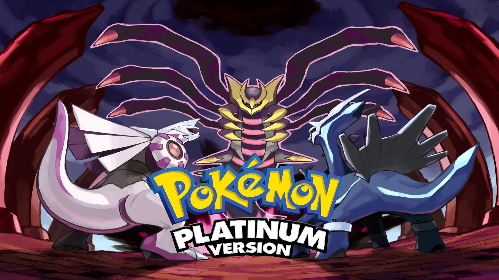
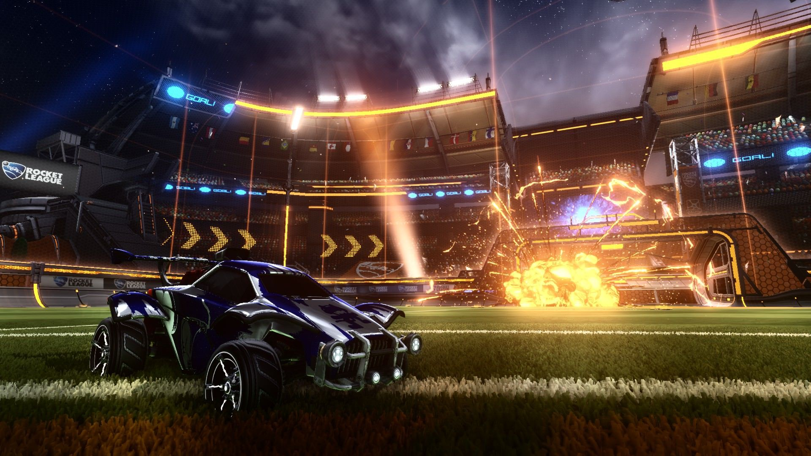
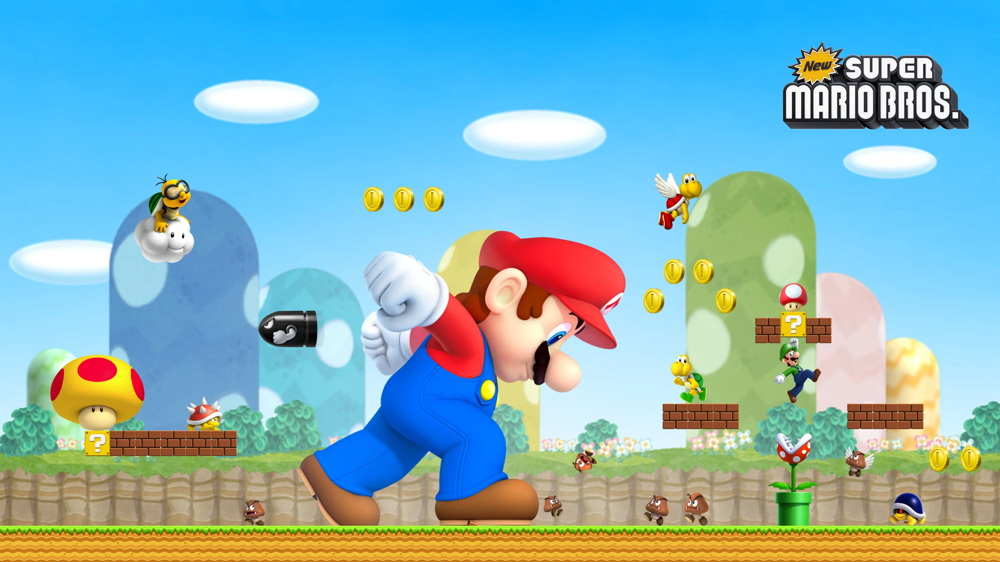
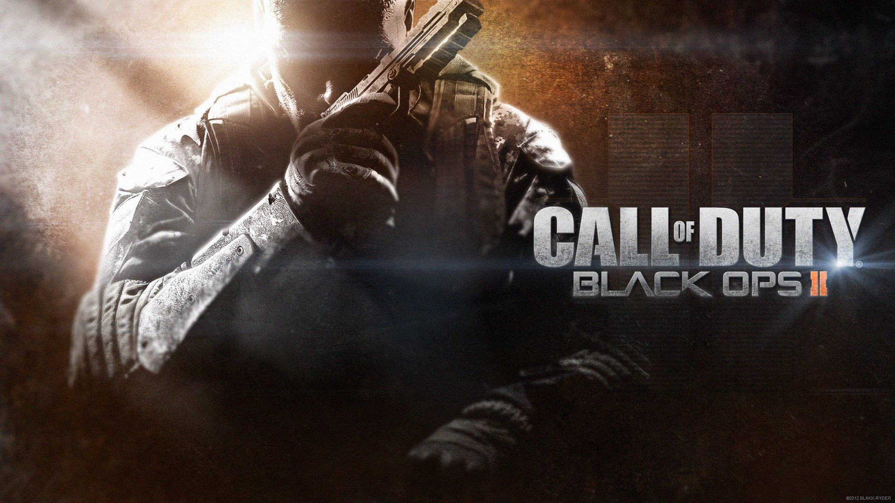
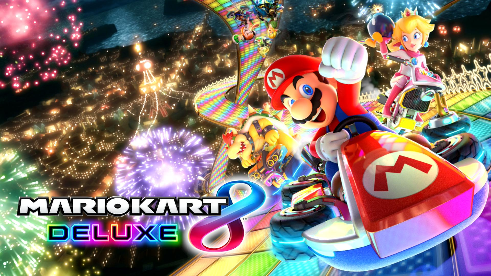
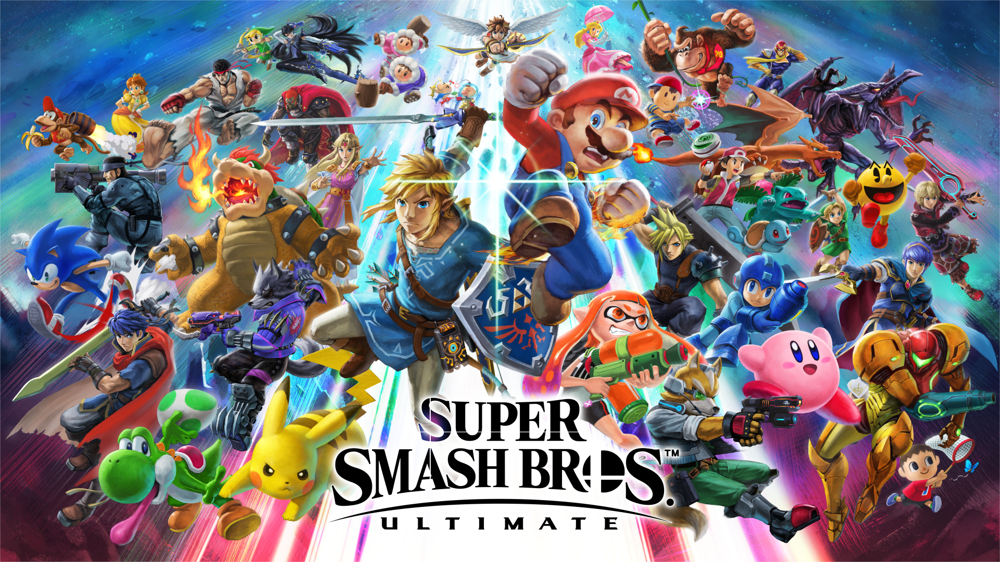
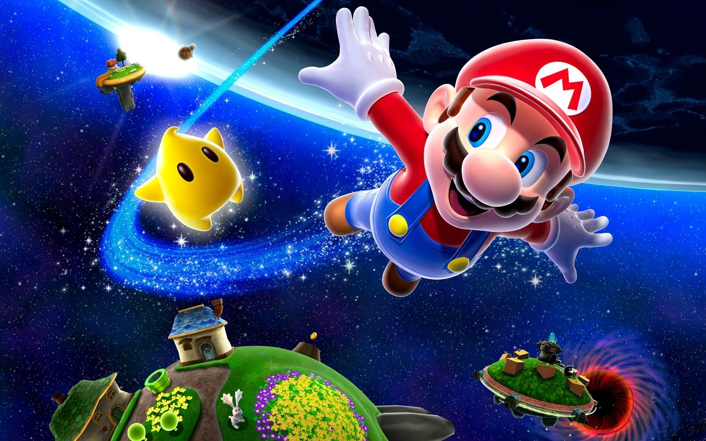

10: Pokémon Platinum
Pokémon Platinum Version is a 2008 role-playing video game developed by Game Freak, published by The Pokémon Company and Nintendo for the Nintendo DS. The game is in the fourth generation of pokémon games along with Pokémon Diamond and Pearl. Gen 4 is widely considerd to be one of the best in the pokémon community because of the unique setting in the sinnoh region and the changes they made to the battle system.
9: Fortnite
Fortnite is an online video game developed by Epic Games and released in 2017 for the PC, the Xbox, and the PS4. While this game is known for all the cringy memes that came from it, the game no doubt had an impact on the gaming community. It was the first game to get main stream attention and crossovers. Celebrities such as Drake, Marshmello, and JuJu Smith-Schuster all played the game on stream, breaking Twitch numbers. On top of this main stream attention, the game has crossovers with other massive franchises such as Marvel and Star Wars.

8: Rocket League
Rocket League is a car soccer video game developed and published by Psyonix. The game was first released for PlayStation 4 and Windows in July 2015, and has been ported to many other systems since. While the game is very simple, it has an incredibly large skill gap, with competative Rocket League being one of the most popular in gaming. It has near perfect vehicle controls and a great art style. The game never fails to provide simple yet chaotic fun with friends.
7: New Super Mario Bros
New Super Mario Bros. is a 2D platform video game developed and published by Nintendo for the Nintendo DS in 2006. It was incredibly successful, selling 30 million copies and thus is the best selling game on the DS. The game was the first 2D Mario game to be released in nearly 14 years and sparked a revival of the 2D platformer genre. While the game is very simple, it helped modernize the formula and brought the genre to a brand new generation of gamers.
6: The Legend of Zelda: Breath of the Wild
The Legend of Zelda: Breath of the Wild is a 2017 action-adventure game developed by Nintendo EPD for the Nintendo Switch. This game places you in the massive open world of Hyrule where the player is left explore and discover the secrets of the kingdom. With an massive and immersive world to explore, an engaging story, and tight and responsive controls, it is no wonder why the game recieved game of the year in 2017.

5: Call of Duty: Black Ops II
Call of Duty: Black Ops II is a 2012 first-person shooter video game developed by Treyarch and published by Activision and was released for PC, the PS3, and Xbox 360 in 2012. The Call of Duty franchise is one of the best selling in gaming, and most people consider BO2 to be the best in the series. With it's near furture setting, a branching path campaign, immersive zombies experiences, and a fast pace multiplayer, BO2 offers the best variety in the franchise.
4: Mario Kart 8 Deluxe
Mario Kart 8 is a kart racing game developed by Nintendo for the Wii U in 2014 and re-released on the Switch in 2017. Mario Kart is one of the most iconic franchises in gaming, and it's most recent game is the most successful selling around 60 million copies. The game contains the most tracks out of any other in the series, and coupled with the near perfect controls, vibrant colors, and endless mermories created with friends, it is one on the best games Nintendo has made.
3: Super Smash Bros Ultimate
Super Smash Bros. Ultimate is a 2018 crossover fighting game developed by Bandai Namco Studios and Sora Ltd. and published by Nintendo for the Nintendo Switch in 2018. This game contains every fighter from every smash game previously and puts them all into one game. The engaging and addicting gameplay loop coupled with the great controls have provide endless hours of entertainment.
2: Minecraft
Minecraft is a sandbox game developed by Mojang Studios. The game was created by Markus "Notch" Persson in 2011 using the Java programming language. This is one of the most popular games every made as it is the best selling game of all time, selling over 238 million copies. The game is also easy to mod, creating an infinite amount of ways one can enjoy the experience. It is a game anyone can play solo or with friends and lose track of time.

1: Super Mario Galaxy
Super Mario Galaxy is a 3D platform game developed and published by Nintendo for the Wii in 2007. Setting the game in space provided the development team to experiment with numorious new gameplay ideas, especially the new gravitational based gameplay. The game is visially stunning and coupled with the stellar fully orchestrated soundtrack and unexpectedly dramatic story, it recieved game of the year in 2008.
